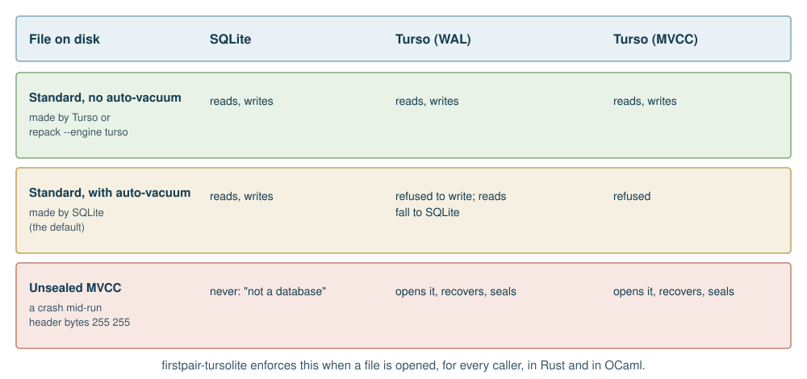
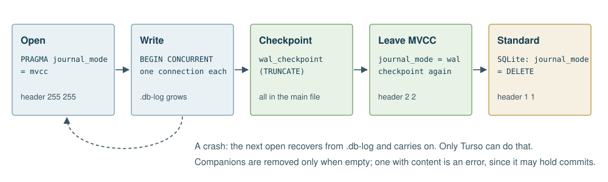

packdir stores containers with one of two engines, chosen per run. They offer different things:
| SQLite | Turso | |
|---|---|---|
| What it is | The standard embedded database | A Rust rewrite of SQLite, in process |
| Maturity | Decades of production use | Young; moving quickly |
| Journal | Rollback journal or WAL | WAL, or its own MVCC log |
| Writers in one file | One at a time | With MVCC, overlapping transactions |
| Auto-vacuum | Yes | Experimental, and not safe here |
| Stock tools read its files | Yes | After sealing, yes |
Turso reads and writes SQLite’s file format, but not every file in every state, and the differences have consequences. Each rule below came from testing Turso 0.8.3 against stock SQLite, and firstpair-tursolite enforces them when a file is opened, for every caller.

Turso does not write a file with auto-vacuum.
Without the experimental flag it opens such a file read-only. With the
flag, it wrote, and stock SQLite’s PRAGMA integrity_check
then reported freelist and pointer-map failures on the result (measured
on 0.8.2 and 0.8.3). Turso under MVCC refused outright, though not
before changing the header. So packdir refuses. A write to such a
container with Turso stops with an error and changes nothing. Reads fall
to SQLite, and repack --engine turso rebuilds a container
without auto-vacuum, keeping every member.
SQLite cannot open a file left in MVCC mode. MVCC sets header bytes 18 and 19 to 255, and stock SQLite reports “file is not a database”. So every file Turso writes is sealed when it closes.
Turso has no rollback journal. It ignores
journal_mode = DELETE. So a Turso write works in WAL or
MVCC, and sealing puts the standard form back.
Opening a standard file with Turso changes its bytes, because Turso turns the header to WAL on open. A read-only open does not. packdir opens with Turso read-only whenever it is only reading.

Closing a container Turso wrote takes four steps: checkpoint, leave
MVCC, checkpoint again, and let SQLite return the file to a rollback
journal. The empty -wal and .db-log files are
removed. A companion with content in it is an error, because it may hold
commits. So after a clean run a Turso container is a standard SQLite
file, apart from having no auto-vacuum, and sqlite3 -Ax
reads it like any other.
A crash leaves the file unsealed. That is safe, because Turso recovers from its log the next time the file is opened, and closing it seals it. Until then only Turso can open it, so a build without Turso says it needs Turso.